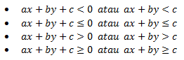

Suatu pertidaksamaan dikatakan sebagai pertidaksamaan linear dua variabel ketika pertidaksamaan tersebut memiliki dua variabel dengan masing-masing variabel berderajat satu.
Bentuk umum dari pertidaksamaan linear dua variabel yaitu :

Pertidaksamaan linear dua variabel memiliki himpunan penyelesaian yang tak terhingga banyaknya. Himpunan penyelesaian pertidaksamaan linear dua variabel biasanya ditampilkan dalam bentuk grafik pada bidang cartesius.
Langkah-langkah dalam mencari himpunan penyelesaian suatu pertidaksamaan linear dua variabel dapat dilakukan dengan cara sebagai berikut
Membuat garis ax+by=c
1. menentukan titik potong garis ax+by=c dengan sumbu-X (y=0) dan sumbu-Y (x=0) sehingga diperoleh dua titik yaitu (x,0) dan (0,y)
2. menghubungkan dua titik tersebut menjadi sebuah garis
Menguji titik pada salah satu daerah di luar garis
1. pilih satu titik uji P(x1, y1) yang berada di luar garis ax+by=c
2. hitunglah nilai dari ax1 +by1
3. bandingkan nilai dari ax1 + by1 dengan nilai c, yaitu :
a. jika ax1 + by1 < c, maka bagian yang memuat titik P(x1, y1) menjadi daerah himpunan penyelesaian dari pertidaksamaan ax+by < c
b. jika ax1 + by1 >c, maka bagian yang memuat titik P(x1, y1) menjadi daerah himpunan penyelesaian dari pertidaksamaan ax+by > c